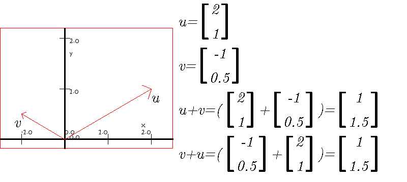
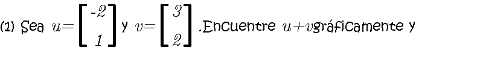
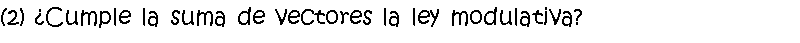
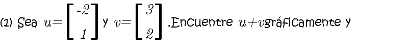
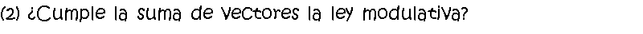

Cuando se suman los vectores, se suman las componentes de cada vector. Gráficamente el segundo sumando se representa por una flecha que se traslada. Los dos vectores forman un paralelogramo. La suma de los vectores es la diagonal que parte del origen.
En las matrices también se suman los respectivos elementos. Aunque la suma de vectores es muy útil, la suma de matrices no lo es tanto
 


